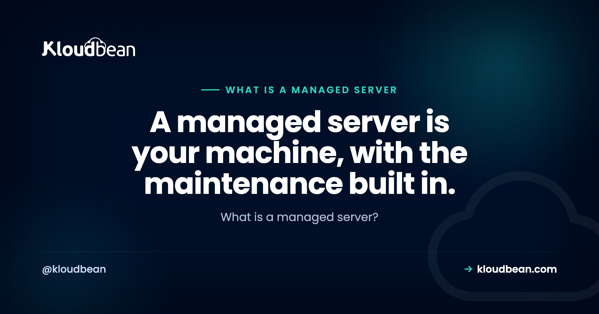

What Is a Managed Server? The Definition, and What's Included

What is a managed server, and why does it cost more than the raw box sitting next to it on the same pricing page? You're comparing two lines. One reads "unmanaged, a few dollars." The other reads "managed," several times the price, for what looks like an identical Linux machine. The word doing all the work is "managed," and it's worth pinning down before you pay for it.
So here's the plain version: what a managed server is, what the provider runs, what stays yours, and whether it fits how you work.
A managed server is a cloud server where the provider runs the operational layer for you: provisioning, the OS and stack, patching, security hardening, SSL, backups, and monitoring. You still own and control the application and its data. Managed server meaning, in one line: the plumbing is handled, and the thing you built stays yours.
What is a managed server, in plain terms?
A managed server is a real server. Same CPU, same RAM, same Linux underneath as the cheap one. "Managed" isn't a different class of hardware. It describes who does the operations work on top of the machine.
On an unmanaged server you get a bare operating system and an IP address, and everything above that is your job. Web server, runtime, database, firewall, SSL, patches, backups, monitoring, all yours to install and keep alive. On a managed server the provider handles that operational layer, and you interact with your application instead of the OS. That's the whole managed server meaning in a sentence: someone else runs the box so you don't have to.
Most managed servers today are managed cloud servers, which matters more than it sounds. First, the part people actually want spelled out: what does managed hosting include?
What does managed hosting include? The operational layer, itemized
"Managed" gets thrown around loosely, so let's make it concrete. When a server is managed, the platform typically owns these layers, and each one is a real job that bites if it's skipped:
- Provisioning. The server comes up ready to run, not as a bare OS you assemble by hand. You pick a size and a region, and a few minutes later there's a working box.
- The OS and stack. Web server, language runtime, and database engine are installed and wired together for you. No hand-editing config at midnight to get a request to reach your app.
- Patching. OS and security updates get applied. Skip these on your own box and you become the unpatched machine a scanner eventually finds.
- Security hardening. A firewall and intrusion blocking, on from the start. On Kloudbean that baseline is a Shorewall firewall plus Fail2ban, running by default rather than something you remember to set up.
- SSL. Certificates issued and auto-renewed, so HTTPS is the default and nobody gets a browser warning because a cert quietly lapsed on a Sunday.
- Backups. Automatic, restorable copies of the server and its data. The one layer you cannot rebuild from your code repo.
- Monitoring. Health and resource metrics, so a server creeping toward full disk or maxed CPU shows up as a graph, not a 500 error.
Every item there is boring, none of it is your product, and all of it is mandatory if the server is to stay up. Managed hosting is someone taking that whole list off your desk.

A managed server, in cross-section
Here's the whole idea as one picture. Same stack of layers a server always has, but colored by who runs each one. The line across the middle is the part that matters most.
Where the line sits: what stays yours
This is the part marketing pages tend to blur, and the most important to get right. Managed hosting outsources the operations, not the ownership. On a managed server you still own:
- Your application code. The platform runs the stack it sits on. It doesn't write, own, or lock up what you built.
- Your data. The database and files are yours, and portable. You can export them whenever you want. Proof, in two commands:
# your data is yours, and it leaves a managed server anytime
pg_dump "$DATABASE_URL" > my-data.sql # PostgreSQL
mysqldump -u user -p appdb > my-data.sql # MySQLYou also keep application-level security and compliance. The platform hardens the server, but your login flow, your input validation, how you handle secrets, and whether your app meets a given regulation are on you. That's the shared-responsibility split: the platform provides the infrastructure controls, you own the app on top. If compliance is on your radar, that division is worth reading in full in secure and compliant hosting, and the backups half lives in the server backups guide.
Managed vs unmanaged server: who gets the 2am page?
The cleanest way to feel the difference is to ask who wakes up when it breaks. On an unmanaged server, that's you. Your box, your pager, your Saturday. On a managed server, the platform handles the infrastructure side, so a cert renewal or a kernel patch isn't a task you have to remember.
| Unmanaged server | Managed server | |
|---|---|---|
| Ops work (patching, stack, backups) | You do all of it | Handled by the platform |
| SSL + firewall | You install and renew | Free SSL, firewall on by default |
| The 2am outage | Your phone rings | Platform handles the infra side |
| Your app + data | Yours | Still yours |
That's the definitional take. The full decision, the responsibility split task by task and how to choose on purpose rather than on price, is its own piece: managed vs unmanaged hosting. And a cheap VPS is rarely as cheap as the sticker once your hours are on the ledger, which we broke down in the real cost of an unmanaged VPS.
Managed server vs managed cloud server: same thing?
Mostly, these days, yes. The phrase "managed server" is old enough to predate the cloud, when it often meant a managed dedicated box, a physical machine in a rack that a host looked after for you.
But a managed cloud server is what most people are actually buying now, and it's the better deal for almost everyone. It's a virtual machine on a provider's cloud, so you get fast provisioning, resizing while it runs, and the resilience of moving to healthy hardware if a host fails, plus the managed operational layer on top. For the ground-up mechanics of the cloud server itself, before the "managed" part layers on, that's exactly what how cloud hosting works walks through.
Who a managed server is right for (and who should skip it)
Managed isn't automatically the right answer. It's the right answer for a specific, and pretty large, set of people.
Reach for a managed server if you're a solo developer or a small team without a dedicated sysadmin, if you're shipping a product and every hour spent on apt upgrade is an hour not spent on features, or if you simply want a real server you can log into without signing up to babysit it. That's most teams running something that matters.
Consider unmanaged instead if you need deep, unusual control over the operating system, a custom kernel, an exotic stack, a specific tuning profile that a managed layer would only get in the way of. Or if you're learning Linux on purpose and the hands-on grind is the entire point. Or for a throwaway lab box where a wipe costs you nothing.
One honest note, because it gets this backwards a lot: managed is often the experienced choice, not the beginner one. Plenty of strong engineers who could hand-roll the whole stack pick managed anyway, precisely because they know exactly how many hours the ops tail eats and have decided their attention is worth more elsewhere. Choosing managed isn't an admission you can't run a server. Usually it's the opposite.

How Kloudbean runs a managed server
To make it concrete: on Kloudbean you launch a managed server on the cloud you choose, and there are seven of them: AWS, AWS Lightsail, Google Cloud, Linode, Vultr, DigitalOcean, and UpCloud. So the machine underneath is tier-1 infrastructure, not a mystery box.
It comes up hardened, with a Shorewall firewall and Fail2ban already running. Free SSL is ready to issue and renews itself. Automatic backups are on. You deploy by pointing at the server rather than hand-configuring Nginx and a service unit, and the backups run on a schedule you can restore from. Test a restore before you need one. A backup nobody has ever restored is a hope, not a plan.

Comparing options and trying to work out what actually separates one managed host from another? What makes the best managed cloud hosting lays out the criteria worth weighing.
The honest boundary
A few things "managed" does not mean, so nobody buys the wrong expectation:
- It's not "someone writes or fixes your code." The platform runs the server and the stack. Your application logic, your bugs, and your architecture stay with you.
- It's not a locked black box. A managed server is a real machine, not a pure platform-as-a-service abstraction. You're not handed a sealed environment you can't see into.
- It's not the end of your security responsibility. The infrastructure is hardened for you; your app-level security and compliance are still yours to own.
- It's Linux. Managed here covers the Linux world, PHP, Node, Python, Ruby, Java, and their databases, not Windows or .NET and IIS stacks.
On a managed server the operations are handled, and your app and its data stay yours to export any day. For most people running something real, that's a good trade.
A real server, with the maintenance built in.
Launch a managed server on the cloud you choose, hardened and backed up from minute one, and deploy by pushing code. Start free at kloudbean.com, or see plans on pricing.
7 clouds · Free SSL · Automatic backups · Firewall + Fail2ban built in · One dashboard · Free migration · Free trial
FAQ
What is a managed server in simple terms?
A managed server is a real server, usually a cloud server, where the provider runs the operational layer for you: provisioning, the OS and stack, patching, security hardening, SSL, backups, and monitoring. You still own and control your application and its data. In short, the plumbing is handled while the thing you built stays yours.
What does managed hosting include?
Typically it includes provisioning the server, installing and configuring the stack (web server, runtime, database), OS and security patching, a firewall and intrusion blocking, SSL issuance and renewal, automatic backups, and health monitoring. On Kloudbean that means a Shorewall firewall and Fail2ban on by default, free auto-renewing SSL, and automatic backups from launch.
What is the difference between a managed and unmanaged server?
The hardware is the same. The difference is who does the operations. On an unmanaged server you get a bare OS and handle patching, SSL, firewall, backups, and monitoring yourself. On a managed server the platform runs all of that, so you work on your application instead of the operating system. The price gap reflects that labor and risk, not the machine.
Is a managed server the same as a managed cloud server?
Usually, yes. A managed cloud server is a virtual machine on a provider's cloud with the managed operational layer on top, so you get fast provisioning, resizing, and resilience plus hands-off operations. The older phrase managed server can also mean a managed dedicated physical box, but most managed servers people buy today are cloud servers.
Do I lose root access or control on a managed server?
You keep control of what matters: your application, your data, your deploys, and your configuration. A managed server is a real machine you can reason about and log into, not a sealed platform. The platform takes over the operations underneath, which is the point. If you specifically need deep, unusual control of the OS or a custom kernel, that is one of the real cases for unmanaged.
Is a managed server worth the extra cost?
It is worth it when your time is better spent building than administering servers. The higher price buys back the hours you would otherwise spend on setup, patching, SSL, backups, and incident response, plus the risk of a bad upgrade or a missing backup. If you enjoy or want that work, unmanaged is cheaper. If you do not, managed usually wins on real cost.
Who needs a managed server?
Solo developers and small teams without a dedicated sysadmin, and anyone shipping a product who would rather spend hours on features than on operations. It also suits people who can run a server perfectly well but have decided their attention is worth more elsewhere. If you need deep OS control or are learning Linux on purpose, unmanaged may fit better.
Does managed mean the provider owns my data?
No. The provider runs the server and the stack, but your code and your data stay yours and remain portable. You can export a managed database with pg_dump or mysqldump and take it anywhere. Managed hosting outsources the operations, not the ownership.
Is a managed server only for beginners?
No, and that is a common misread. Managed is often the experienced choice. Plenty of engineers who could build the whole stack by hand pick managed on purpose, because they know how many hours ongoing operations actually consume and would rather spend them on the product. It is a decision about where to spend attention, not a measure of skill.
Can I move from an unmanaged server to a managed one?
Usually yes, and it is a migration rather than a rewrite. Your app and its data are standard and portable, so you bring the code, restore or import the data, and repoint your domain. Kloudbean also offers free migration assistance if you would rather not run the move yourself.